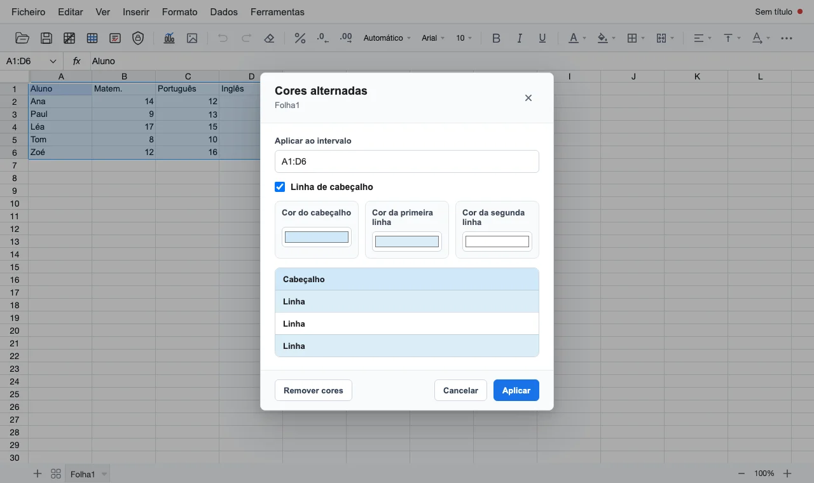

Formatação
Texto
| Comando | Acesso |
|---|---|
| negrito, itálico, sublinhado | ; Ctrl B, Ctrl I, Ctrl U |
| tipo de letra | lista Arial: treze tipos de letra |
| tamanho | lista 10, ou Formato › Tamanho da letra: 9 a 72 |
| cor do texto, do fundo | |
| limpar a formatação | , Formato › Limpar formato |
Na paleta de uma cor, Repor cor retira-a; PERSONALIZADO abre o seletor do sistema.
Enquanto se modifica uma célula, a formatação aplica-se à parte selecionada do texto.
Alinhamento
| Comando | Opções |
|---|---|
| horizontal | esquerda, centro, direita |
| vertical | em cima, ao meio, em baixo |
| rotação | inclinada, vertical, empilhada |
| moldagem | Transbordar: sobre as células vazias vizinhas; Quebrar linha: em várias linhas; Cortar: cortado no limite |
Sem alinhamento escolhido, os números e as datas ficam à direita, o resto à esquerda.
Limites
traça o limite escolhido; a sua seta dá os lados (superior, exterior, interiores, todos, nenhum, diagonal), a cor e o estilo do traço. Escolher cor e estilo antes do lado.
Unir
ou Formato › Unir células:
| Comando | Efeito |
|---|---|
| Unir tudo | uma só célula, que conserva um só conteúdo |
| Unir verticalmente | uma célula por coluna |
| Unir horizontalmente | uma célula por linha |
| Separar células | devolve as células |
Um intervalo que contém células unidas não pode ser ordenado nem filtrado.
Cores alternadas
ou Formato › Cores alternadas... colore uma linha em cada duas do intervalo selecionado, com uma linha de cabeçalho se se quiser. As três cores escolhem-se.

São cores de fundo normais: não acompanham uma ordenação nem uma linha inserida. Remover cores apaga-as do intervalo.
Grelha
ou Ver › Mostrar › Grelha oculta ou mostra as linhas cinzentas, em todas as folhas do livro. A impressão tem o seu próprio ajuste.
Para uma cor que depende do valor, ver Formatação condicional.